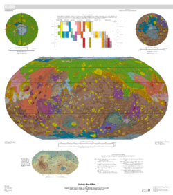

Mars is the fourth planet from the Sun and the second smallest planet in the Solar System, after Mercury. Named after the Roman god of war, it is often described as the "Red Planet" because the iron oxide prevalent on its surface gives it a reddish appearance.[15] Mars is a terrestrial planet with a thin atmosphere, having surface features reminiscent both of the impact craters of the Moon and the volcanoes, valleys, deserts, and polar ice caps of Earth. The rotational period and seasonal cycles of Mars are likewise similar to those of Earth, as is the tilt that produces the seasons.
Mars is a terrestrial planet that consists of minerals containing silicon and oxygen, metals, and other elements that typically make up rock. The surface of Mars is primarily composed of tholeiitic basalt,[33] although parts are more silica-rich than typical basalt and may be similar to andesitic rocks on Earth or silica glass. Regions of low albedo show concentrations of plagioclase feldspar, with northern low albedo regions displaying higher than normal concentrations of sheet silicates and high-silicon glass. Parts of the southern highlands include detectable amounts of high-calcium pyroxenes. Localized concentrations of hematite and olivine have also been found.[34] Much of the surface is deeply covered by finely grained iron(III) oxide dust